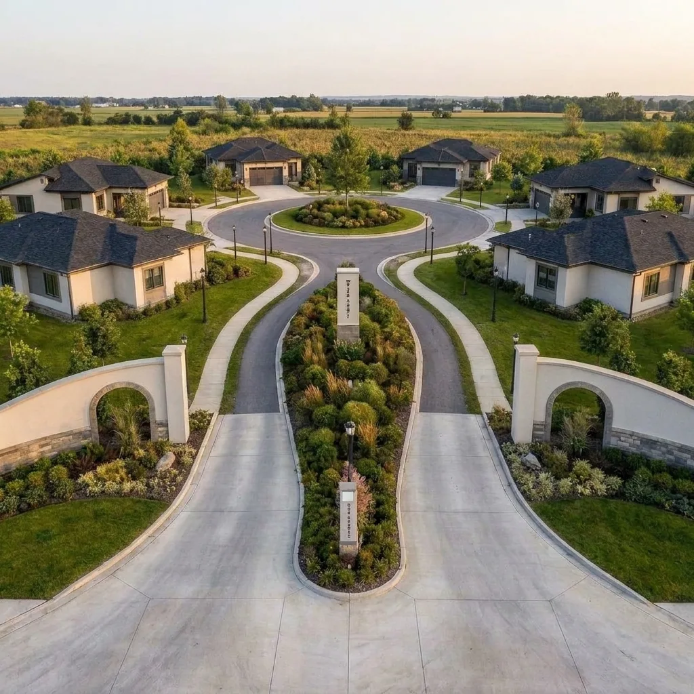
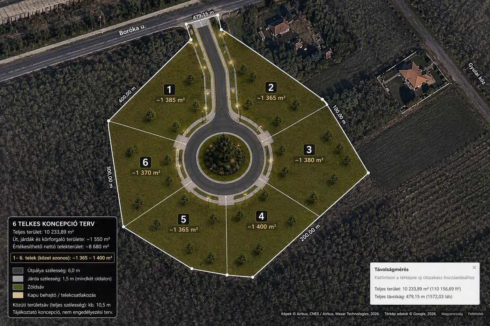
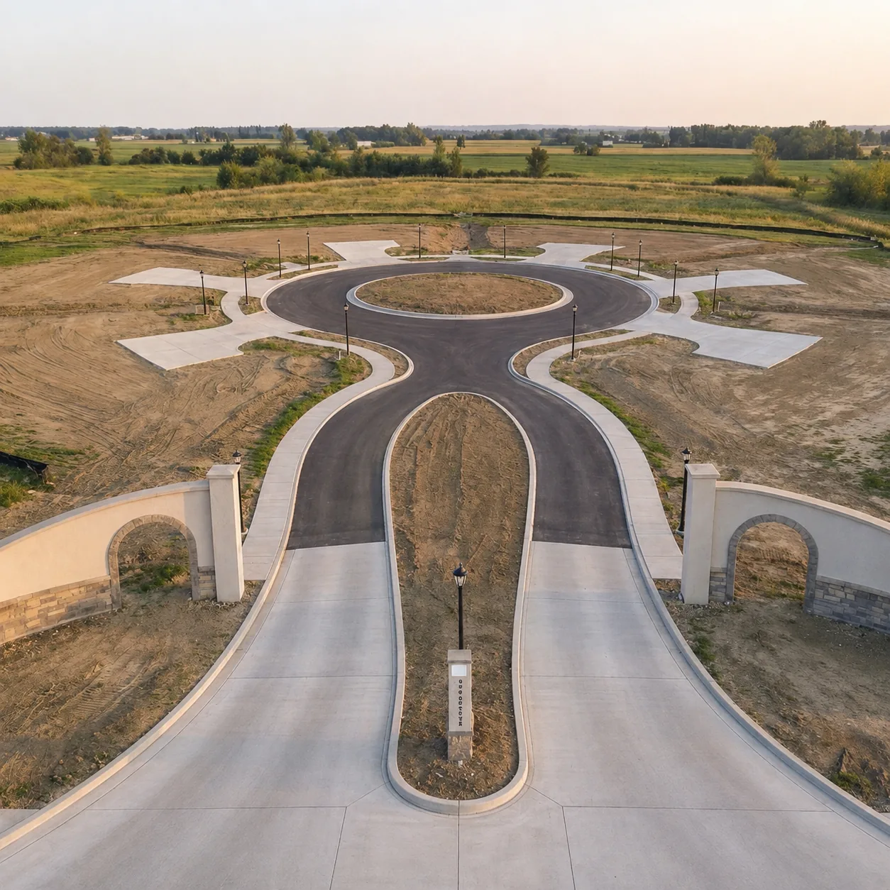

Alacsony intenzitás
Mindössze hat telek, közel azonos, nagyméretű kialakítással.
ELŐZETES FEJLESZTÉSI KONCEPCIÓ KADAFALVÁN
Mindössze 6 nagyméretű telek a természet közelségében, kompromisszumok nélkül.
NEM EGY ÁTLAGOS LAKÓPARK
A Boróka Liget célja nem a lehető legtöbb telek kialakítása, hanem hat tágas, jól megközelíthető otthonhely létrehozása.
A koncepció központi eleme a kettéválasztott bejárat, a parkosított körforduló, a járdákkal kísért belső út és a meglévő erdőrész döntő részének megőrzése.
Mindössze hat telek, közel azonos, nagyméretű kialakítással.
A fás-erdős környezet megőrzése a tervezés egyik alapelve.
Rendezett utcakép és visszafogott, zöld arculati irányelvek.

TELEKKIOSZTÁSI KONCEPCIÓ
A méretek tájékoztató jellegűek. A végleges telekhatárok és műszaki paraméterek a szakági egyeztetések során alakulnak ki.

A KONCEPCIÓ ALAPJAI

Kettéválasztott be- és kihajtás, központi körforduló és biztonságos telekmegközelítés.
Gyalogos kapcsolat, parkosított zöldsávok és meleg fényű, lefelé irányított világítás.
Ivóvíz, szennyvíz, villamos energia, hírközlés és közvilágítás telekhatárig történő kiépítésének vizsgálata.
Öntözhető bejárati sziget, parkosított körforduló és a meglévő erdőrész döntő részének megőrzése.
„Nem négyzetmétereket kínálunk, hanem teret egy nyugodtabb élethez.”
BORÓKA LIGET · KADAFALVALÁTVÁNY ÉS HANGULAT
A képek a minőségi közterületi és tájépítészeti szándékot szemléltetik, nem végleges építészeti terveket.
KECSKEMÉT · KADAFALVA
A vizsgált terület a Boróka út felől kapcsolódik Kadafalva meglévő lakóterületeihez. A koncepció része a külső gyalogos hálózathoz, lehetőség szerint a közeli buszmegálló irányába vezető kapcsolat vizsgálata.
Megnyitás térképenÉRDEKLŐDÉS ÉS KAPCSOLAT
A projekt jelenleg előzetes fejlesztési és egyeztetési szakaszban van. Érdeklődésedet már most jelezheted.